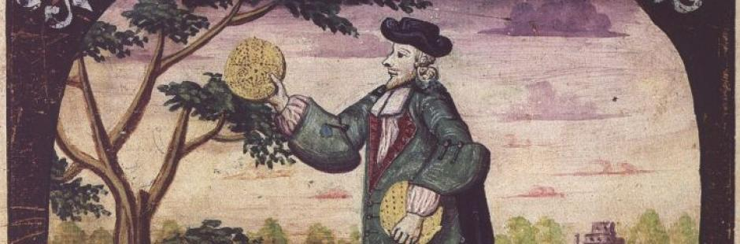

Matzah, the Unleavened Bread: How to Make Matzah (Recipe and Video)

See also the article "Unleavened Bread That Came Down from Heaven".
Matzah (Heb. מַצָּה; more often in the plural, מַצּוֹת, matzot; literally "pressed out", "without moisture") are thin flat cakes of unleavened dough, as opposed to the leavened bread, hametz, that we eat all year except during the seven days of Pesach. The Torah calls matzah the bread of affliction. For the feast of Pesach (throughout all seven days of the feast) the Torah allows only this bread without leaven.
Eating matzah at Pesach is a commandment of the Torah, in memory of the hasty departure of the Israelites from Egypt. In their haste they baked bread that had not had time to rise (see Exod. 12:39). And also:
(Exod. 23:15)
The Feast of Unleavened Bread shalt thou keep:
seven days thou shalt eat unleavened bread,
as I commanded thee, at the time appointed in the month Aviv,
for in it thou camest out from Egypt.
אֶת־חַג הַמַּצּוֹת תִּשְׁמֹר
שִׁבְעַת יָמִים תֹּאכַל מַצּוֹת
כַּאֲשֶׁר צִוִּיתִךָ לְמוֹעֵד חֹדֶשׁ הָאָבִיב
כִּי־בוֹ יָצָאתָ מִמִּצְרָיִם
The commandment of the Feast of Unleavened Bread
Matzah is usually baked from wheat flour. But it can also be baked from barley or oat flour. As for me, I think it ought to be made from barley flour, because barley was the bread of slaves.
On the night before our people left Egypt, the Israelites were to eat a meal of the Passover lamb, which was to be eaten with matzah (unleavened bread) and bitter herbs (Heb. hazeret): celery, parsley and the like.
Anyone who wishes can bake unleavened bread and celebrate as the Torah prescribes. A video showing how it is done can be seen here.
Matzah, the unleavened bread: preparation
Ingredients:
— 0.5 kg flour
— 250 g ice-cold water
Method:
1. Knead the dough until it forms flakes.
2. Turn it out onto a board. Pound the dough with a meat mallet (or another heavy object) until it is smooth.
3. Divide the lump into four parts and roll each out with a rolling pin to a thickness of 1.5–2 mm.
4. Prick holes all over the surface with a fork or a special spiked roller.
5. Bake in a clean (unoiled), very hot frying pan over an open flame (not in the oven).
The matzah is ready when the sheet turns yellowish with brownish spots.
Important: to get kosher matzah, the whole process, from the moment the flour touches the water until the rolled-out dough is placed in the pan, must not take more than 18 minutes! It is held that in this time the dough does not have time to rise.
Egg matzah
Ingredients:
— 0.5 kg flour
— 4 eggs (instead of water)
Method: the same as for ordinary matzah.

You can watch how matzah is made in this video:
See also the article "Unleavened Bread That Came Down from Heaven".
Author: Ephraim Kalish / Torah-Art
 Pesach in Israeli Advertising
Pesach in Israeli Advertising The Voice of the Shofar, Part 5. Israel, a Shofar in the Hands of the Creator
The Voice of the Shofar, Part 5. Israel, a Shofar in the Hands of the Creator Pesach: Matzah Dishes by Misha Rubin
Pesach: Matzah Dishes by Misha Rubin